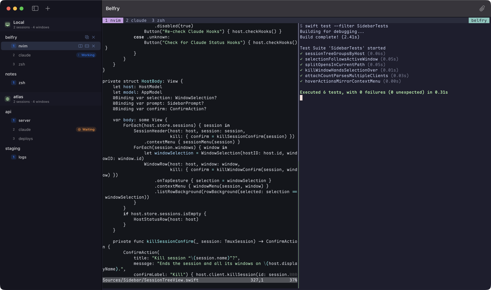
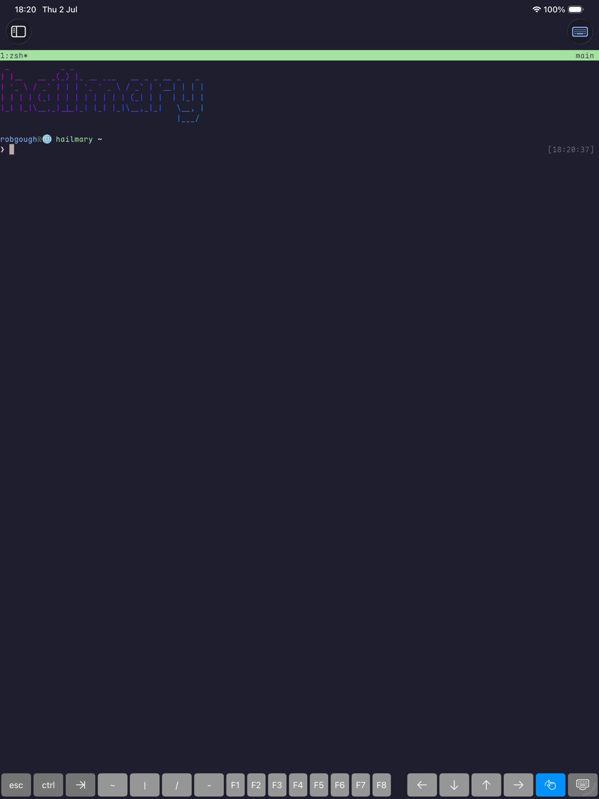

1:overview


2:features
-
control mode
The sidebar tree is driven by tmux control mode (
tmux -C). On tmux ≥ 3.2 updates arrive by server push — near-zero idle traffic; older servers fall back to a light poll. -
instant switching
Every visited session keeps a warm, attached surface. Changing sessions is a visibility toggle, not a re-attach.
-
sessions outlive the app
On macOS the local tmux server is started under launchd, so even force-quitting Belfry can't take your sessions down.
-
battery-conscious
Hidden surfaces absorb output without rendering, badges animate in the render server, and the idle app measures ~0% CPU.
-
native rendering
macOS terminals render with libghostty; iPad uses SwiftTerm over SwiftNIO SSH. Bundled Maple Mono NF keeps nerd-font glyphs sharp on iPad.
-
made for remote work
SSH connection sharing and a native askpass dialog on macOS; Keychain-stored credentials, touch scrollback and a background grace period on iPad. Pairs beautifully with Tailscale.
3:claude code badges
Run Claude Code inside your tmux windows and the sidebar shows what it's up to: Working, or Waiting on you. Optional per-host status hooks install (and uninstall) with one click from the UI, and on macOS the Dock badge counts the windows waiting for your input — so you notice from across the room.
4:build
No toolchain needed on the Mac: download the notarized app (universal, macOS 14+), unzip, drag to Applications. Or build from source:
macOS 14+
# needs tmux (brew install tmux) + Xcode
git clone https://github.com/robgough/belfry
cd belfry
scripts/make_app.sh release
open Belfry.app
iPadOS / iOS 17+
# needs xcodegen (brew install xcodegen) git clone https://github.com/robgough/belfry cd belfry xcodegen generate open BelfryiOS.xcodeproj # set your team, run
Add hosts in-app: hostname, user, and a password or ed25519 key. Secrets go in the Keychain, never in the hosts file. The remote end just needs sshd and tmux.
5:how it works
Each host gets two planes. The control plane is a tmux -C client attached to a hidden per-launch session — it feeds the sidebar and issues actions, and never sizes your real sessions. The data plane is one terminal surface per visited session running tmux attach.
Both ride a per-platform transport behind a small seam: macOS forks PTYs and drives the system ssh with connection sharing; iPadOS speaks SSH in-process via SwiftNIO, running tmux as exec channels.